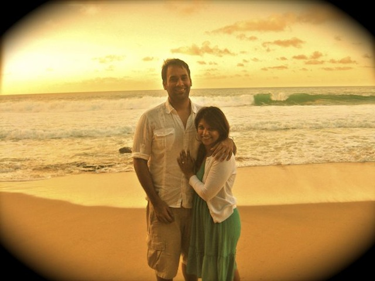

The Proposal
When Rajeev arrived in Kauai with guitar in tow, it was a bit of a red flag. I knew he hated traveling with his guitar, but frankly my suspicion went in one ear and out the other. We were on vacation in Hawaii, after all. My mind could do nothing but relax. And, I had previously decided that this proposal was something for him to plan, not me
Plan, he did.
He was quick to tell me he only brought his guitar on the condition that I wouldn't make him sing and play in front of everyone. So, I kept the guitar stored in the back of the SUV a secret from my family. He said we would go to the beach on Saturday to watch the sunset, strum the guitar and have dinner. My family was leaving on Friday evening and so Saturday night would be the only night we would have to ourselves before we had to leave, too. It made perfect sense.
Saturday morning we lived it up Aloha style-kayaking, hiking, chasing waterfalls...a perfect day set to only get better. We got cleaned up for dinner and headed out for the gorgeous landscape of Secret Beach-- a beach I had been talking about for days.
Hidden, secluded with massive lava rocks and big crashing waves; very "From Here to Eternity"; too dangerous for a swim, but perfect to watch a sunset. A beach like this doesn't deserve to come easy-and Secret Beach did not disappoint. Turned out, you had to hike to the beach. So, sweaty Rajeev with a heavy guitar and case dangling from his arms, and I with a bag nestling a couple of beers, hiked down a steep and winding ravine to the treasures of Secret Beach. At the bottom, we were face to face with nature at its best. The scene was rare and other worldly.
We sat down on a bed of rocks - I fumbled with my camera, Rajeev tuned his guitar. We were hardly paying attention to one another. Then Rajeev strummed a beat on the guitar and looked at me like, "Oops, I gave it away!"
Still clueless, I wondered, "Why the sheepish look?"
He told me, "I learned a song for you."
Insert Awwww here. I was happily taken aback and immediately thought, "OMG, he is going to propose!!!" He asked me to guess what song he was strumming. It sounded familiar, but I wasn't sure. I made a couple of false guesses and he finally told me it was "What a Wonderful World" by Louis Armstrong.
This is where I have to back up. You see, the date was January 21st, the day before the 4-year anniversary of my dad's passing. I felt good about being on vacation in Hawaii on this normally reflective date because Hawaii was a place my dad truly loved. That's part one.
Part two is that after my dad died, I learned from one of his friends that when he would visit him for one of their typical marathon Indian music weekends, he would always ask him to put on "What a Wonderful World" before he went to sleep. When his friend told me this, days after his passing, I was really surprised because while my dad was a huge Indian music buff, he never really cared for English music. But, I loved hearing this detail, because when you listen to the words of the song, it sounds like the view from heaven.
I had told Rajeev that every time I hear this song, I felt like my dad was near and was trying to send me a message about whatever was going on in my life at that moment.
So now fast forward to this present moment where Rajeev is playing this song for me on the beach. Seconds earlier, I had butterflies in my stomach thinking he was going to propose. But, the moment he told me he was playing "What a Wonderful World", I immediately thought-"Wait a second, this is not about me?! How could I be so selfish?! He is not going to propose-- he is playing this song to honor my dad on this day. How lucky am I to be with this wonderful gentleman who would do something so sweet-learn a song to mark this important anniversary while we are in Hawaii, a place my dad loved so much!"
I wept through the song, overcome with warm emotion. And after it was over, he turned to me and asked, "Do you know why I played this song?"
I said, "Yeah, you remembered that tomorrow is the anniversary."
"Noooo," he said. "Today is actually our 13 month anniversary... and... I already asked your mom for her permission, and I played that song to ask for your dad's permission..."
I melted. The rest is a blur... all in slow motion. He got down on a knee, pulled out a little black box...I don't even remember hearing the question, though he ensures me he did ask. Eventually the little black box opened and all I can recall next is Rajeev asking, " Do you want me to put it on you?"
I did. So he did. And here we are.
